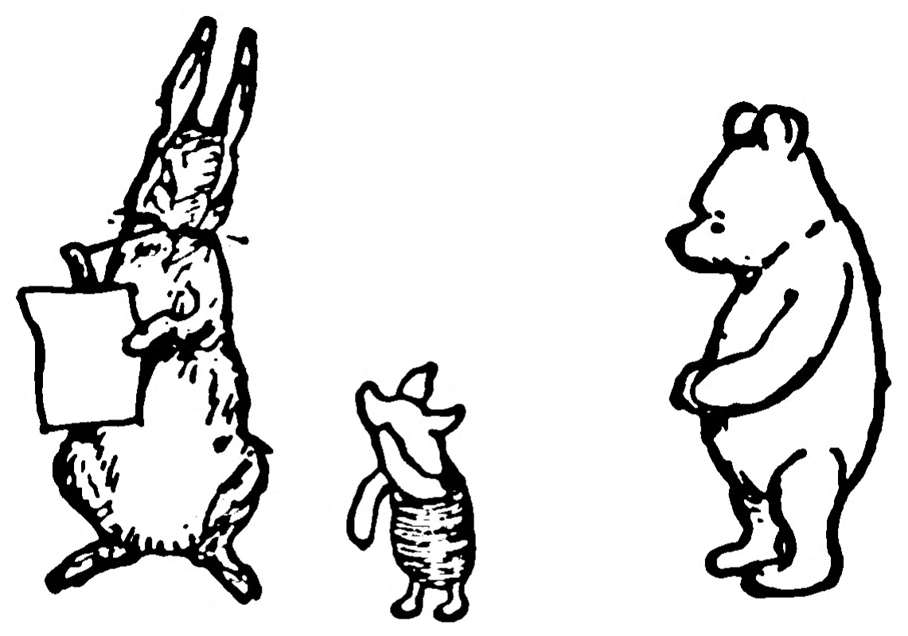

| 出品 | 英國 |
| 年代 | 1926 |
| 原創作者 | A.A. Milne (插圖 E.H. Shepard) |
| 原發行商 | Methuen |
| 首次登場 | 1926 |
| 類型 | 童書系列 |
| 版權狀態 | ✔ 公版 部分公版（僅原著 1926 書本版） |
A.A. Milne 1926 年出版《Winnie-the-Pooh》，係英語世界最著名嘅童書之一。原著 1926 年書本已入美國公版（2022 年，95 年期滿），但迪士尼 1966 年之後嘅動畫形象（紅色小背心嗰個）仍然受版權保護。
用 1926 年原著黑白插圖版 Pooh（E.H. Shepard 風格）做創作，避免用迪士尼嘅紅色小背心彩色形象。原著角色性格、對白都屬公版。

1926 原著入面 Rabbit 係愛整齊、有點急性子嘅朋友，成日同 Pooh 嘅貪吃形成對比。佢常被 Pooh/Roo 搞亂間屋，會表現懊惱但其實樂意幫手。同 Pooh 係「整齊 vs 邋遢」互補。
「Really, Pooh!」（Rabbit 無奈時嘅口頭禪）